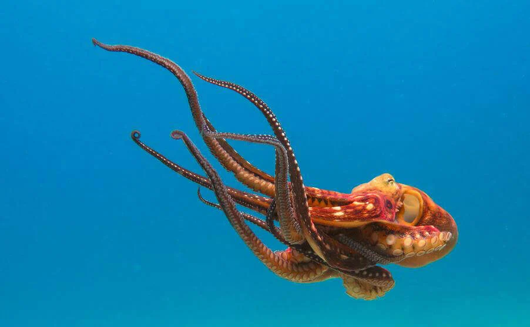
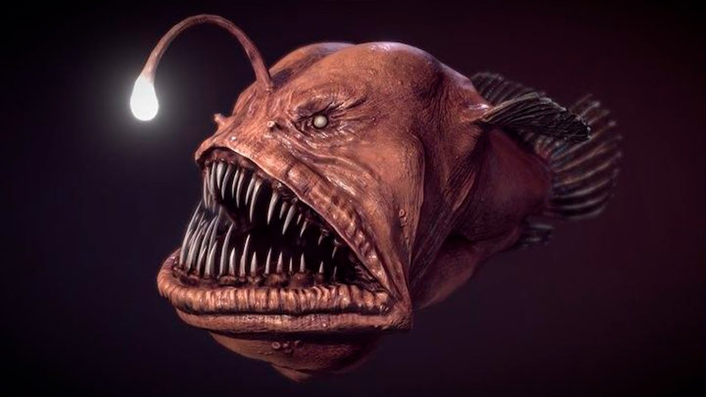
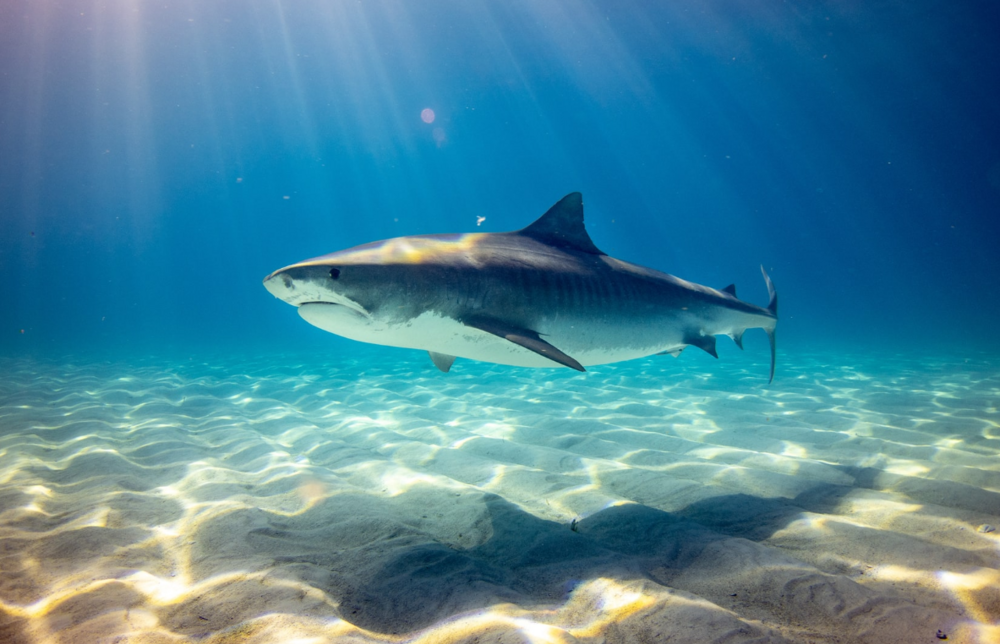

Adaptions
Camouflage in Octopus
- Octopuses use specialised cells to blend into their surroundings:
- Chromatophores: contain pigments to change color
- Iridophores and leucophores: reflect light
- Allows for rapid changes in skin color, pattern, and texture
- Can alter body posture to mimic objects like rocks or coral
- Aids in avoiding predators and ambushing prey

Bioluminescence in Deep-Sea Anglerfish
- Anglerfish use a light-producing organ called an esca to attract prey:
- Esca is located at the end of a modified dorsal fin spine
- Bioluminescence is critical in the dark ocean depths
- It helps lure prey, like small fish and invertebrates
- It may also be used for communication in the dark
- Enables for hunting in extreme deep-sea environments

Body Temperature Control in Sea Turtles
- Leatherback sea turtles regulate body temperature through gigantothermy:
- They maintain higher body temperature in cold waters
- Their large body size and thick fat layer helps retain heat
- Unique blood flow patterns reduce heat loss in flippers
- Allows for migration across various temperature zones
- Easier to dive into deep, colder waters to access food sources

Buoyancy Control in Sharks
- Sharks maintain buoyancy through an oil-filled liver:
- The liver contains squalene oil, which is less dense than water
- It helps sharks achieve neutral buoyancy without a swim bladder
- Helps to conserves energy as they glide through the water
- Enables sharks to quickly change depth while hunting
- Allows them to cover large distances in search of prey
